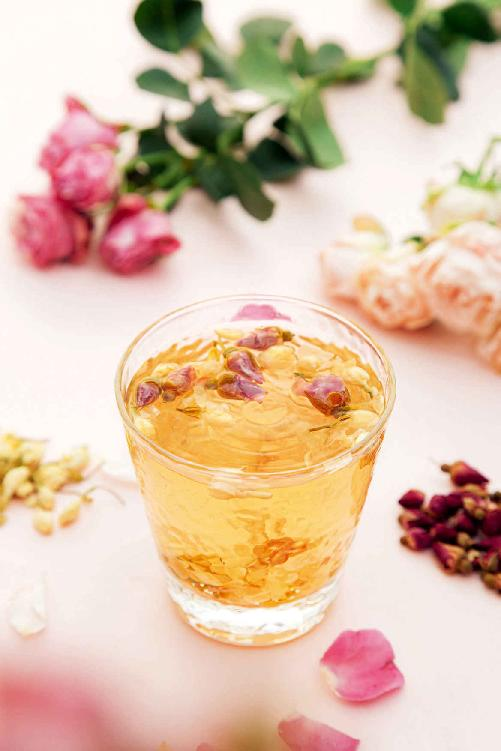
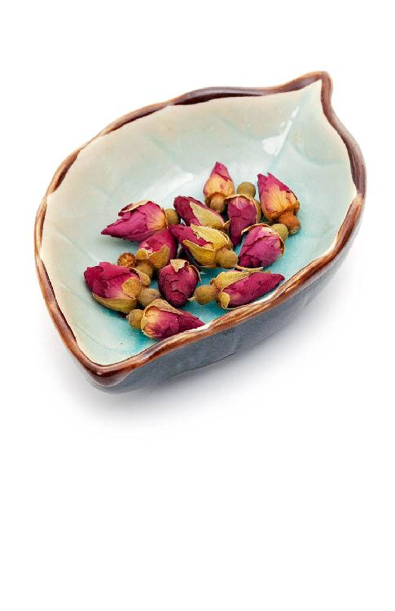
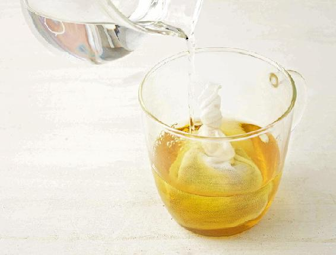
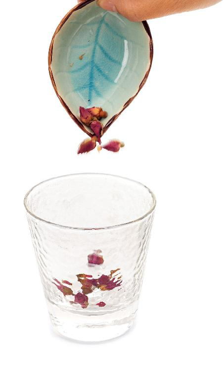
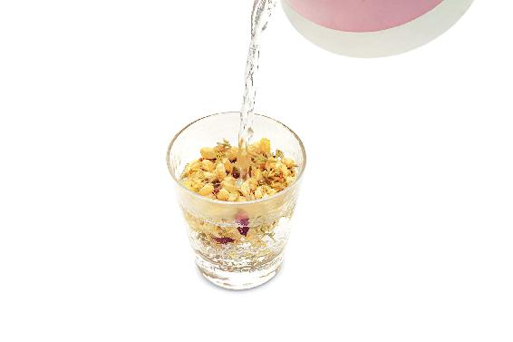
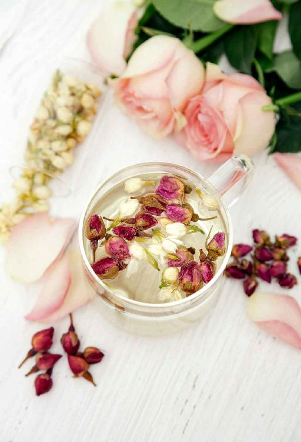
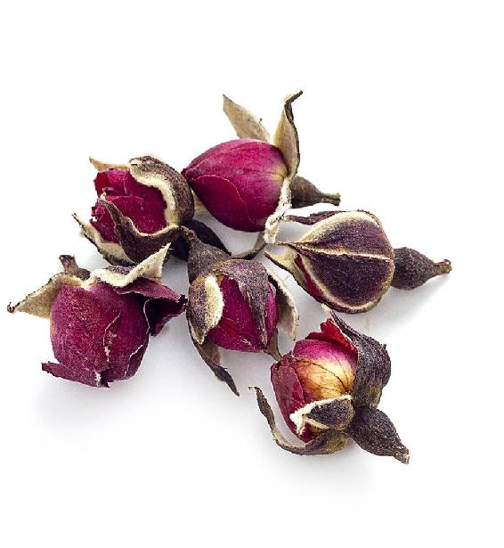
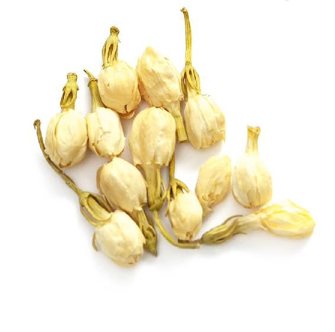
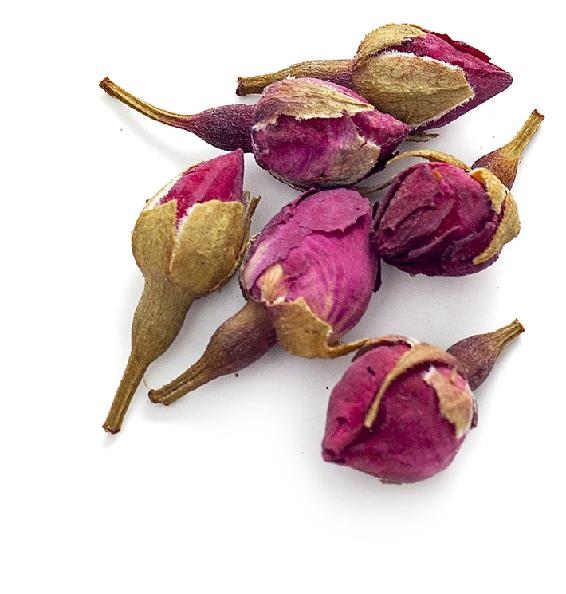
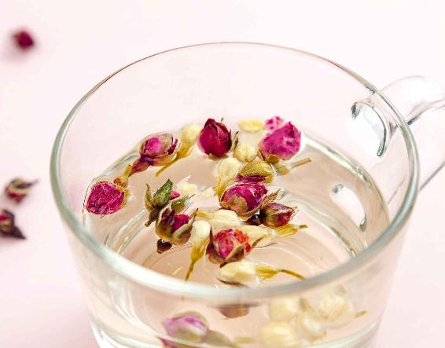

春分节气是春天的中间点，它把春天分成了两半。春分节气是春气最盛的时候，春气是生发之气，春气一来，万物就开始萌生。
春天，我们的人体内也有春气，那就是肝气。肝是属木的，在春天的时候，草木生长，人体的肝气也是最旺的。到了春分节气，肝气就旺盛到了一个顶点。平时肝气不疏、肝气郁结的朋友，在春分节气，可能两胁（也就是身体左右两侧腋下到侧腰的这一段）有一种胀痛的感觉，特别是在左胁有隐隐的胀痛，或者发痒。总之，有一点不舒服，这时您就要特别注意疏理肝气。
肝脏是“沉默的器官”，肝气郁结或者升发过度的时候，它不一定表现在肝经这一段，而是表现在身体的其他地方。比如，有些朋友在这个时候会发作胃痛，或者高血压，或者偏头痛，或者失眠、胃口不好，吃完东西觉得腹胀；还有的女性朋友在生理期之前可能会感觉乳房胀痛特别明显。这些都说明身体的肝气需要疏理了。
允斌解惑：情绪低落，喝甘麦大枣汤
花叶菩提：老师，我在春分节气，梦到多年不联系的同学，还有去世的长辈，早晨醒来后情绪很低落。
允斌：可以喝一点甘麦大枣汤。
芯芯皮皮妈：陈老师，我肚脐左侧胀疼，总感觉有气聚在那里，中医说是肝气郁结，喝一段时间中药后减轻了，但不彻底，老师有什么好方子吗？
允斌：用青皮试一试。
推荐两道在春分节气喝的茶饮，它们可以帮助我们的身体疏理肝气。这两道茶饮，一道是保健茶饮，在春分节气，大多数的朋友都可以喝；另一道茶饮，适合一些有肝气郁结的朋友喝。
1.茉莉玫瑰双花茶
这道茶饮在整个春天的后半段都是可以喝的，不论男女。
茉莉玫瑰双花茶是春季养生必喝的花茶，它既能养肝，又能养脾；既能疏肝理气，缓解抑郁，又能活血养血。
男性朋友如果工作压力大，或者血脂高，有脂肪肝，喝这道茶就能起到很好的调理作用。

茉莉玫瑰双花茶


原料：茉莉花4克，玫瑰花12朵。


做法：每天取玫瑰花和茉莉花一起冲泡，闷泡大约5分钟以后就可以喝了。您可以反复地冲泡几次，当茶饮用。
如果您有虚火或口气重，在喝的时候，还可以把茉莉花的用量加大，因为茉莉花可以通过行气来清虚热，而且它不凉，带一点温性，能祛除胃中的浊气，使人吐气如兰。在茉莉开放的过程中，香气的合成、花朵形态的变化都需要足够的能量，所以茉莉的花蕾营养十足，能养脾胃。
这款茶饮您不要把它当成药，就把它当成一道平时喝的茶饮就好。
喝之前，最好先品一品它的香气，因为它有开窍、疏肝理气的作用。其实，药物也好，食物也好，它的味道、气味本身也是其效果的一部分。
茉莉，“能除胸中一切陈腐之气”。
茉莉香气清雅四溢，花开香满一园，泡茶香满一屋，所谓“一卉能熏一室香”。
茉莉看起来小小的，为什么能释放出这么多的香气，就像歌里唱的“好一朵茉莉花，满园花开，香也香不过它”呢？
这是因为茉莉含有的芳香成分有几十种之多，这些香味组合起来功效是不得了的，用古人的话来说就是“能除胸中一切陈腐之气”。
人体内有“陈腐之气”，就会散发出难闻的口气，身体也会散发出不好的体味。
所以香花那么多，中国人最爱用茉莉与清茶相伴。饮茉莉不仅能让茶室飘香，久而久之，人的体味和口气也会更加清新。
喝过的茉莉也不要扔掉，可以再泡一次水来洗面，也有除垢祛味的作用。
2.舒肝解郁茶
如果您有了一些肝气郁滞的问题，比如，有了前面所说的几种症状之一，或者女性已经有乳腺增生，或者男性朋友有脂肪肝等问题，都可以喝下面这一道加强版的茶饮，这道茶饮在《吃法决定活法》这本书里有过介绍，叫舒肝解郁茶。
女性朋友喝这道茶还可以预防黄褐斑，调理在春天肝火过旺引起的睡眠问题。
很多朋友，特别是女性，如果肝气不疏（中医常讲，“气有余，便是火”），在春天的时候就很容易有肝火，从而容易失眠。
肝火型失眠，有一个很典型的特点就是梦多，睡觉的时候会不断地做梦。甚至有的朋友跟我说，像连续剧一样，接连不断的，这种情况下您喝这道舒肝解郁茶就有很好的调理作用。
经过了几场倒春寒、几次春雨，春分节气终于到了，正是百花盛开的时候。我总觉得这是老天爷有意的安排，让空气中充溢着百花的芳香，帮助我们来疏发肝气。
当您喝这两道茶的时候，最好不要把它当成一个任务，捏着鼻子像喝中药似地灌下去。而是要悠闲地品味这一杯茶，好好地闻一闻它馥郁的香气。
花的芳香不仅能打开人体气的通道，还能使人放松心情。在春分这个百花盛开的季节，希望您能有从容的心情来品花香、饮花茶，让心情像花一样盛放。

舒肝解郁茶



原料：月季花6朵，玫瑰花6朵，茉莉花12朵。

做法：
这三种花都很娇嫩，冲泡之后，闷制的时间不要过长，可以开着盖子来泡。这样您就可以先欣赏水里的花形、花色，闻一闻香气，之后再饮用这道茶。
功效：可以疏肝理气，活血，通血脉，解忧郁，让人心情愉快，缓解心理压力。
允斌叮嘱：
这道茶饮也是可以反复冲泡的，一天之中的任何时候都可以喝，把它当成平常喝的茶水就可以了。
读者评论：喝了双花茶，感觉香到牙齿了
悠然_rv9 ：第一次用茉莉花加玫瑰花，真是香，感觉香到牙齿了。
卢丽曼：泡了玫瑰花喝，感觉头晕好多了。
雪：这两天在喝玫瑰茉莉双花茶，孩子也很喜欢喝。花香沁人心脾，真的有解郁的功效。
无限定格：我乳腺胀痛，眼皮上还长了桃花癣，喝了三天玫瑰花茶，皮肤过敏就好转了。
Jessie Zhang：玫瑰花茶我喝了两个月了，一开始不明显，忽然有一天发现自己不像原来那么急躁、焦虑了，入睡也快了。现在我又加了蒲公英根，排气多了，感觉更好了！
允斌解惑：7岁的小孩可以喝玫瑰花茶吗？
雨聆：陈老师，7岁的小孩可以喝玫瑰花茶吗？
允斌：可以的。
Z·LiL：陈老师，胃寒可以喝玫瑰花茶吗？
允斌：可以的，玫瑰是偏一点温性的。还可以加姜、枣。
S&M：老师您说玫瑰花可以舒缓头痛，我每次出门只要在外面待两三小时头就会痛，像这种情况经常喝玫瑰花茶会有效吗？
允斌：您这种情况可能喝姜枣茶更好。
Henrietta ：不加糖，直接喝玫瑰花茶可以吗？
允斌：可以的，单喝就是玫瑰本身的作用。
o o：我这个月月经量稀少，可以多喝玫瑰花茶吗？
允斌：可以的。
孙瑛：有子宫肌瘤的人适合喝玫瑰花茶吗？
允斌：很适合。
一年有四时八节，四时就是春夏秋冬四季，八节就是立春、立夏、立秋、立冬，加上春分、秋分、冬至、夏至。古人也用八节来象征人体的八个关节部位。
春分的时候，春天正好过去了一半，春分把春季分为了两半。
汉代的董仲舒写了一本书叫《春秋繁露》，书中是这样描写春分的：“至於仲春之月，阳在正东，阴在正西，谓之春分；春分者，阴阳相半也，故昼夜均而寒暑平。”
这个“分”字，非常讲究。交春分节气这一天，白天和黑夜一样长，这就是分昼夜。春分把春天的九十天分为两半，这就是分寒暑。古人还认为春分到来时，把阴阳也各分为一半，所以《周易》的乾卦和坤卦里面都分别有它的一条。
农历二月初二“龙抬头”的时候我讲过，龙抬头在《周易》里表示为乾卦的二爻——“见龙在田”；春分在乾卦里是第四爻——“或跃在渊”。这个“跃”表示在春分的时候，“龙”（天上的龙星）从地平线上一跃而起。这就是《说文解字》里说的：“龙……能幽能明，能细能巨，能短能长，春分而登天，秋分而潜渊。”
春分登天的龙（其实就是天上的龙星），古人把它称为登龙，也称为升龙。这是春分在乾卦里的描述。
乾卦代表的是阳，坤卦代表的是阴。在坤卦里，春分出现在第五爻——“黄裳，元吉”。黄色象征的是中间，裳是古人系在下半身的裙子，代表着下面。而黄色在中间，裳在下面，又代表什么呢？就是土地。
春分也是古人祭祀土地神的日子。土地，古人把它称为“社”。有一个词“江山社稷”，其实“社”就是土地神，“稷”就是谷神——管粮食的神。社、稷合起来就是有土地、有粮食，就是一个国家。这就是“黄裳，元吉”——春分在坤卦中的描述。
在天气上有一个非常明显的特征——过了春分之后，天气会逐渐变得暖和起来。在春分之前，往往会有几场倒春寒，天气有时比较冷，但是一过春分，天气明显变得温暖起来，这是因为过完春分，阳气就会胜过阴气了。
春分的“分”，也分人体，即把人体分为两半——上半身和下半身。
古人认为，春分的时候人体的气在我们的两胁——接近腰的位置。
接近人体腰部的这个气，其实就是肝气，所以春分的时候，人体肝气最盛，而养生重点就在两胁，在肝。
很多人怕肾虚，其实，现代人肾虚很大原因是伤了肝。肝、肾是同源的，肝一伤，肾必然就会伤。
因此，不堪重负的肝是现代很多人肾虚的原因，也是现代很多流行病的根源。比如，肝的功能失调，血就不会健康，人就会得心血管疾病。血脂的代谢全靠肝脏的疏泄功能来完成，如果肝气不疏，脂肪和胆固醇就不能被人体吸收和分解，它们停留在血液里，就会导致高脂血症、动脉硬化，停留在胆囊，就变成胆结石。
肝脏是负责解毒的器官，现在有很多的水源、土地被污染，有些食物也是不安全的，有化肥、农药、各种化学添加剂等。这么多毒吃到肚子里，都需要肝脏来分解、代谢。如果吃得太多，肝脏的负担就会特别大。
肝藏血，肝需要血才能正常地工作。古人早就告诫过我们，“卧，则血归于肝”，但现在的人很多时候都没时间好好地来睡觉。每天从早到晚都是盯着电脑、手机，导致视力下降，眼睛干涩；有些朋友还出现了飞蚊症，因为久视（长久地看东西）伤肝血。
其实，对肝伤害最大的还是人的不良情绪。
要知道，肝脏除了是解毒的器官外，也是负责情绪的器官。如果经常有压力、不良情绪得不到疏导，导致肝气长期郁结，慢慢地就会出现血瘀，引发肿瘤或增生。
现代有很多女性乳腺增生，男性前列腺增生，还有一些人得肿瘤，这些都跟肝的功能失调直接相关。如果我们有一个健康的肝，那么，很多的疑难杂症就会与我们无缘了。
一年之中，春分节气时人体的肝气最盛，这也是人们保肝、护肝的一个关键时期。这个时候，疏泄肝气，防止它郁积是一个重中之重的任务。
肝是喜欢舒畅的，最怕受到压抑，我们万万不能去压抑它。肝气一旦受到压抑，人就会烦躁、忧虑、情绪波动，还有一些人会出现不明原因的头痛、腹胀、失眠等。日积月累，人体可能会出现亚健康和慢性病，比如，肥胖、高脂血症、心血管病，女性朋友还会出现月经不调、乳腺增生，以及妇科的各种肌瘤、囊肿。
春分节气，我们怎样来疏发肝气呢？
第一，喝疏肝理气的茶饮。
第二，注意自己的情绪。
肝气与人的情绪是息息相关的，当情绪受到压抑的时候，肝气就压抑；当情绪得到疏导的时候，肝气就能疏发。
春天到了，花草树木都把枝叶舒展开了，我们也要把自己的面部表情放松，把心情舒展开来，多笑一笑。
春分是一个特别美的节气，北宋的易学大家邵雍写过一首诗来描写春分：“四时唯爱春，春更爱春分。有暖温存物，无寒著莫人。好花方蓓蕾，美酒正轻醇。安乐窝中客，如何不半醺。”
诗人在一年四季中最爱春分这个节气，因为这时天气不冷不热，花正含苞，酒正轻醇，舒舒服服地窝在自家的小院里，与自然万物共享春光，真的是其乐陶陶。